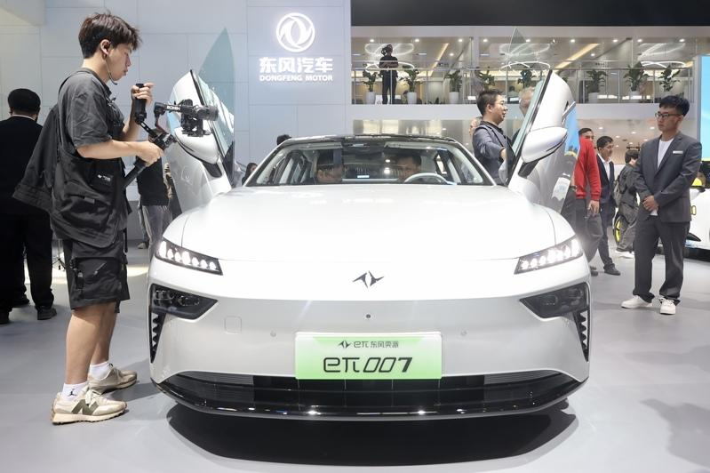

意大利政府拟引入中国东风汽车集团到当地设厂增加产量，并制衡目前唯一在义国生产汽车的跨国集团斯特兰蒂斯（Stellantis）。不少义媒认为这是「双面刃」，可能促进市场与就业机会，也面临中国影响力渗透威胁。
意大利官员昨天向外媒透露，意大利政府与中国国有汽车集团东风的谈判进入「最后阶段」，东风即将到意大利设厂。同样风声今年稍早已出现过一次，意大利企业暨制造部长乌索（Adolfo Urso）4月曾公开表示，正与中国东风集团洽谈设厂，但东风集团当时向媒体回应「这是虚假消息」。
同一市场消息在4月、8月两度曝光，中间最大转折是，意大利企业暨制造部长乌索、意大利总理梅洛尼（Giorgia Meloni）在7月先后访问了中国，因此多数义媒将此事归类为梅洛尼访中成果之一。但引入中国汽车集团到意大利设厂，到底对义国逐渐弱化的汽车业是一剂强心针，还是「饮鸩止渴」，舆论看法不一。
意大利英文媒体「Decode39」警示，意大利虽退出中国「一带一路」倡议，中国对意大利产业的影响力仍不断扩张，尤其在梅洛尼访中后，义中立刻签署多项产业合作，包括意大利Bee Solar公司与中国华晟公司签署光电合作案，意大利电动车公司EuroGroup Laminations与中国汽车零件公司喜世橡胶集团签约合作。
义国政府排定今天与Stellantis展开闭门谈判，抢先一天释出「中国东风汽车将赴义设厂」的风向球，意大利舆论认为动机昭然若揭，是希望借此给Stellantis压力，要求该公司增加在意大利生产的量能。
Stellantis是由义法企业合资，并且是目前唯一在意大利生产汽车的集团，但近年转移生产重心到其他国家，在意大利的产量逐渐下滑。
根据驻意大利代表处公布的商情资讯，去年意大利汽车总产量约75万辆，今年第一季数据更不乐观，今年汽车预期总产量为63万辆，距离义国企业暨制造部设置的「年产百万辆汽车」目标愈来愈远，至少必须增加1/3产量才能填补缺口。
义国政府为振兴本土汽车产量，积极吸引中国汽车业来投资设厂；而在欧盟对中国电动车加征高额关税的背景下，中国汽车业也更有兴趣在欧洲设厂，借此降低成本。
不过中义汽车业的合作之路仍有分歧点。根据意大利媒体「晚邮报」（Corriere della Sera）报导，中义双方都提出了「一些条件」。
报导指出，对中国来说，东风汽车完全由北京政府控股，中国企业希望运用北京当局的政府补贴，强化进军国际市场的能力；意大利政府则强调，「必须尊重欧盟对国家补贴的限制」。
报导称，意大利政府同时要求，中国汽车集团必须承诺使用意大利零件供应链，并尊重意大利零件供应商的知识产权。